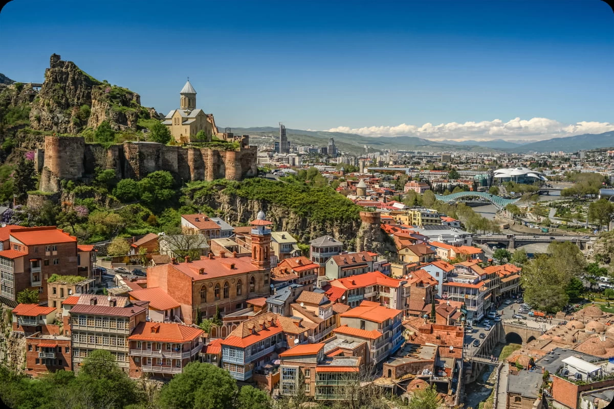
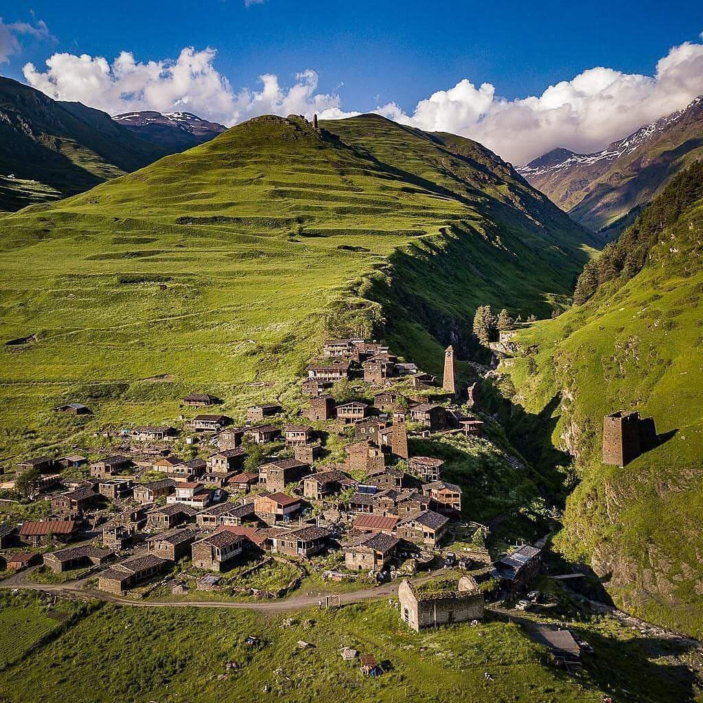
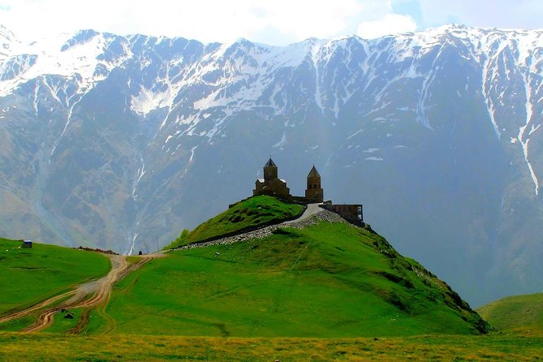

Trevel to Georgia
საქართველოს ეს არის ქვეყანა, რომელიც დაუვიწყარ სანახაობებს გთავაზობს. საქართველო ტურისტულ მიმართულებად ბევრი რამის გამო იქცა. მას გააჩნია მდიდარი ისტორია და შესანიშნავი ადგილმდებარეობა კავკასიის მთებში. საქართველოს კლიმატი იდეალურია ტურიზმისთვის, რადგანაც აქ არასდროს ცივა ძალიან და არც ძალიან ცხელა. მაშინაც კი როდესაც ცივა შეგიძლიათ ზამთრის კურორტებს ეწვიოთ და თუ ცხელა შავ ზღვაზე გაგრილდეთ.



მთავარი ტურისტული უბანი ქალაქის ისტორიული ნაწილი - „ძველი თბილისია“, რომელიც ადრეული შუა საუკუნეებიდან შენდებოდა. აქ ერთ სივრცეშია თავმოყრილი ქართული მართლმადიდებლური, სომხური გრიგორიანული და კათოლიკური ეკლესიები, ასევე უნიკალური მეჩეთი, სადაც შიიტები და სუნიტები ერთად ლოცულობენ , იქვე ახლოსაა სინაგოგაც.„ძველი თბილისის“ განსაკუთრებული ეგზოტიკაა XVIII საუკუნის ჭრელი, გუმბათოვანი აბანოები, სადაც ბუნებრივად თბილი, გოგირდიანი წყალი მოდის. ლეგენდის თანახმად, სწორედ ამ სამკურნალო წყლების გამო გადაწყვიტა მეფე ვახტანგ გორგასალმა ამ ადგილას ქალაქის დაარსება. თბილისი და ზოგადად საქართველო სამოთხეა გურმანებისთვის - აქ კულინარია ხელოვნებაა. ქართული საჭმელი ნებისმიერი გემოვნების ადამიანისთვისაა მისაღები.
თუ გიყვართ მთები და ღრუბლები, მაშინ თუშეთი სათქვენო მიმართულებაა.თუშეთი - საქართველოს ერთ-ერთი ულამაზესი მხარე კავკასიონის ჩრდილოეთ კალთაზე მდებარეობს. იქ ასვლა შესაძლებელია მხოლოდ ზაფხულში ან ადრეულ შემოდგომაზე. თუშეთში მოხვედრა საქართველოში ყველაზე მაღალი, აბანოს უღელტეხილის გავლითაა შესაძლებელი.თუშეთისკენ მიმავალი გზა საკმაოდ რთლია და მასზე გადაადგილება მხოლოდ მაღალი გამავლობის მანქანითაა შესაძლებელი.
თუშეთის ცენტრი სოფელი ომალოა - იუნესკოს მსოფლიო მემკვიდრეობის საცდელ სიაში შეტანილი ზღაპრული სოფელი. სწორედ აქედან უნდა დაიწყო თუშეთის ახლოს გაცნობა და კესელოს ციხეებს ესტუმრო.თუშეთი არის ადგილია, რომელიც აუცილებლად უნდა მოინახულოთ. ის არასოდეს დაგავიწყდებათ.
ყაზბეგი _ ბუნების მოყვარულთათვის არაჩვეულებრივი ადგილია. კავკასიონის ხედებში გახვეული ყაზგები ულამაზესია ოთხივე სეზონზე. აქ აუცილებლად უნდა ნახოთ გერგეთის სამება. გერგეტის სამება - სტეფანწმინდის გვირგვინი და ქართული ხუროთმოძღვრების გამორჩეული ძეგლია.ტაძარი დაახლოებით XIV საუკუნეშია აგებული.
ადგილობრივ მოსახლეობას ბევრი დღესასწაული აქვს, მათ შორის ათენგენობა, ყაზბეგობა და გერგეტობა. ამ დღეებში აქ უამრავი ტურისტი იყრის თავს და საზეიმო განწყობაა კაფეებსა და რესტორნებში. სტეფანწმინდაში აუცილებლად უნდა გასინჯო აქაური, განთქმული ხინკალი, ვეგეტარიანელებისთვის კი საინტერესო კერძია ტრადიციული „ფხლოვანა“ - ხაჭაპური მცენარეული გულსართით.
| ადგილია | ტურისტები(წელიწადში) | ზრდა% | პოპულარობა |
|---|---|---|---|
| თბილისი | 3,200,000 | +12% | ძალიან მაღალი |
| თუშეთი | 85,000 | +11% | საშუალო |
| ყაზბეგი | 540,000 | +22% | მაღალი |
| საქართველო (ჯამში) | 6,500,000 | +15% | ძალიან მაღალი |